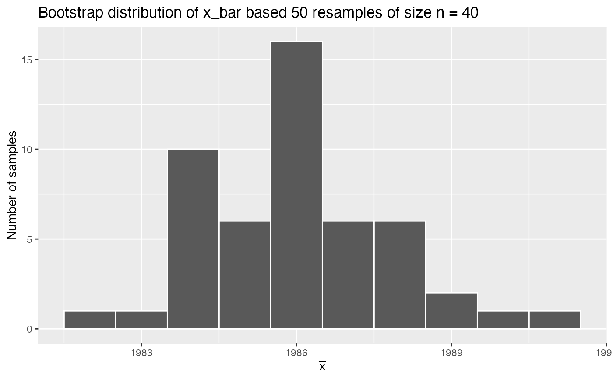

pennies data frameR/pennies.R
orig_pennies_sample.RdA dataset of 40 pennies to be treated as a random sample with pennies acting
as the population. Data on these pennies were recorded in 2011.
orig_pennies_sample
A data frame of 40 rows representing 40 randomly sampled pennies from pennies and 2 variables
Year of minting
Age in 2011
StatCrunch https://www.statcrunch.com/app/index.php?dataid=301596
library(dplyr) library(ggplot2) # Take 50 different resamples/bootstraps from the original sample many_bootstraps <- orig_pennies_sample %>% rep_sample_n(size = 40, replace = TRUE, reps = 50) many_bootstraps#> # A tibble: 2,000 x 3 #> # Groups: replicate [50] #> replicate year age_in_2011 #> <int> <dbl> <dbl> #> 1 1 1986 25 #> 2 1 1974 37 #> 3 1 1997 14 #> 4 1 1993 18 #> 5 1 1988 23 #> 6 1 1996 15 #> 7 1 2004 7 #> 8 1 2004 7 #> 9 1 1985 26 #> 10 1 1961 50 #> # … with 1,990 more rows# Compute mean year of minting for each bootstrap sample bootstrap_means <- many_bootstraps %>% group_by(replicate) %>% summarize(mean_year = mean(year))#># Plot sampling distribution ggplot(bootstrap_means, aes(x = mean_year)) + geom_histogram(binwidth = 1, color = "white") + labs( x = expression(bar(x)), y = "Number of samples", title = "Bootstrap distribution of x_bar based 50 resamples of size n = 40" )